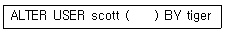
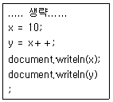

멀티미디어콘텐츠제작전문가(구) (2014-08-17 기출문제)
1과목: 멀티미디어개론
1. 이메일 보안기술 중 하나인 PGP(Pretty Good Privacy)에 대한 설명이 아닌 것은?
- 개인이 개발한 보안기술이다.
- 전자우편의 수신부인 방지를 지원한다.
- 기밀성과 무결성 등을 지원한다.
- RSA와 IDEA 등의 암호화 알고리즘을 사용한다.
(정답률: 92%)

2. 데이터 암호를 위한 공개 Key 알고리즘에 속하는 것은?
- DES
- SEED
- RSA
- RCA
(정답률: 84%)
3. 악성코드(프로그램) 중 인터넷 또는 네트워크를 통해서 컴퓨터에서 컴퓨터로 전파되는 프로그램으로 다른 컴퓨터의 취약점을 이용하여 스스로 자신을 복제해서 전파되거나 메일로 전파되는 것은?
- 디도스
- 웜
- 백도어
- 트로이 목마
(정답률: 90%)
4. 모바일 TV 미디어와 관련이 없는 것은?
- MMS
- DMB
- DVB-H
- Media FLO
(정답률: 92%)
5. 하이퍼미디어를 구성하는 기본적인 구성 요소가 아닌 것은?
- 리스트
- 링크
- 앵커
- 노드
(정답률: 72%)
6. IP 주소 190.0.46.201의 기본 마스크는?
- 255.0.0.0
- 255.255.0.0
- 255.255.255.0
- 255.255.255.255
(정답률: 67%)
7. LAN 관련 프로토콜 중 CSMA/CD에 대한 프로토콜은?
- IEEE 802.9
- IEEE 802.6
- IEEE 802.5
- IEEE 802.3
(정답률: 50%)
8. UNIX 시스템의 구성요소가 아니 것은?
- Shell
- Kernel
- Input
- Utility
(정답률: 90%)
9. FTP에 관한 설명이 아닌 것은?
- Anonymous FTP는 계정이 없어도 접속이 가능하다.
- File Transfer Protocol의 약자이다.
- 컴퓨터 간의 파일 송/수신이 가능하다.
- FTP의 기본 포트번호는 23번이다.
(정답률: 59%)
10. WCDMA 방식에 대한 설명으로 맞는 것은?
- 동선 가입자 선로를 대체할 수 있는 무선 전송방식이다.
- GPS로 기지국간 시간동기를 맞추어 전송한다.
- 전 세계적으로 2GHz대역의 주파수를 사용하고 있다.
- CATV 전송 및 광대역 가입자망 구축을 위한 전송방식이다.
(정답률: 17%)
11. UNIX의 프로세스 간 통신 호출 시 사용하는 명령어로 프로세스 간에 통신 경로를 만들어 정보 교환이 가능하도록 하는 것은?
- abort
- finger
- pipe
- segment
(정답률: 84%)
12. Brute-Force 공격에 해당하는 설명으로 맞는 것은?
- 통신망 중간에서 인증 정보를 얻어내는 방법이다.
- 모든 경우의 수를 대입하여 암호 해독을 시도한다.
- 서버가 처리할 수 있는 용량 이상의 패킷을 보내 서비스를 마비시킨다.
- 바이러스를 통해 해당 시스템에서 원하는 정보를 습득한다.
(정답률: 72%)
13. 미국 버클리대학에서 개발한 센서네트워크를 위해 디자인된 컴포넌트 기반 내장형 운영체제로 이벤트 기반 멀티태스킹을 지원하는 것은?
- TinyOS
- NES C
- Net OS
- OS2
(정답률: 77%)
14. 컴퓨터시스템을 구성하는 자원(프로세서, 메모리 I/O)을 필요한 만큼 독립적으로 구성하여 시스템을 유연하게 확대, 축소할 수 있기 때문에 클라우드 컴퓨팅 환경에 적합한 시스템은?
- Micro Computer
- RIMM
- Embedded Computing
- Fabric Computing
(정답률: 40%)
15. OSI 7계층에서 데이터가 올바른 경로를 선택할 수 있도록 지원하는 계층은?
- 응용 계층
- 표현 계층
- 세션 계층
- 네트워크 계층
(정답률: 20%)
16. 컴퓨터 또는 네트워크로 들어오는 침입에 대해 사용자의 행위 모니터링, 보안 로그 등의 감시 데이터 분석을 통해 알아내는 것을 무엇이라 하는가?
- IDS
- ARP
- VPN
- DRM
(정답률: 34%)
17. 디지털 무비 카메라로 촬영한 동영상을 전송하기 위해 컴퓨터에 직접 접속하는 인터페이스 방식은?
- IEEE 1394
- RS-232C
- LPT
- COM
(정답률: 34%)
18. 데이터 전송 속도를 나타내는 단위는?
- bps
- fps
- dpi
- ftp
(정답률: 86%)
19. DNS 스푸핑을 이용하여 공격대상의 신용정보 및 금융정보를 획득하는 사회공학적 해킹 방법은?
- 프레임 어택
- 디도스
- 파밍
- 백도어
(정답률: 85%)
20. WML 스크립트에 대한 설명으로 틀린 것은?
- 원 서버와 통신하지 않고 사용자와 상호작용을 한다.
- 임의의 사용자나 환경적인 이벤트에 대한 응답으로 호출 된다.
- 휴대폰을 이용한 무선 인터넷 통신 규약이다.
- 자바스크립트와 유사성을 지닌 스크립트 언어이다.
(정답률: 43%)
21. TCP/IP 프로토콜의 전송계층에서 사용되는 프로토콜은?
- HTTP
- FTP
- IP
- UDP
(정답률: 55%)
22. 해시(Hash) 함수에 대한 설명으로 틀린 것은?
- 임의 길이의 메시지를 일정 길이(120비트, 160비트 등)로 출력하는 함수이다.
- 함수가 일방적인 경우를 메시지 다이제스트라고 한다.
- 메시지의 정확성이나 무결성을 중시하는 보안업무에 사용한다.
- 메시지의 무결성이나 사용자 인증을 사용하는 전자 서명에 유효하다.
(정답률: 59%)
23. MPEG의 동영상 압축 과정에 해당하지 않는 것은?
- 비트스트림
- 코드할당
- 양자화
- 에러제어
(정답률: 54%)
24. 유선 브로드밴드(IP망 기반)를 통해 가입자에게 비디오를 전송하는 서비스를 총칭하며, 방송채널사용사업자(PP) 및 콘텐츠공급자(CP)에게서 받은 프로그램을 인터넷 망을 통하여 가입자에게 전송해 주는 뉴미디어 서비스는?
- CATV
- DMB
- IPTV
- VDSL
(정답률: 94%)
25. 한글을 표현할 때 사용되며, 8비트 크기의 옥테트(Octet) 4개로 표현하는 MIME형 코드는?
- ASCII
- Unicode
- KSC 5601
- EBCDIC
(정답률: 알수없음)
2과목: 멀티미디어기획및디자인
26. 밝기가 다른 두 색을 인접시켰을 때 서로의 영향으로 밝은 색은 더욱 밝아 보이고 어두운 색은 더욱 어두워 보이는 현상은?
- 명도대비
- 한난대비
- 보색대비
- 색상대비
(정답률: 70%)
27. 입체디자인의 상관요소가 아닌 것은?
- 위치
- 길이
- 방향
- 공간
(정답률: 70%)
28. 슈브뢸의 색채조화론에 대한 설명으로 맞는 것은?
- 보색의 조화는 쾌적한 대비를 이룬다.
- 유사색은 적은 양을 분산시켜 사용한다.
- 등간격 3색 조화는 부드러운 느낌을 준다.
- 근접 보색 조화는 안정적이고 세련된 느낌을 준다.
(정답률: 37%)
29. 색상 차이가 많이 나는 강한 배색을 완충시키기 위하여 두색이 분리될 수 있도록 무채색, 금색, 은색 등을 사용하여 조화를 이루게 하는 배색은?
- 리피티션(Repetition) 배색
- 톤온톤(Tone on Tone) 배색
- 세퍼레이션(Separation) 배색
- 토널(Tonal) 배색
(정답률: 73%)
30. 형태의 시각적 특징인 비례에 대한 설명으로 가장 거리가 먼 것은?
- 신의 비례라 불리는 황금분할의 비율은 1:3이다.
- 비례는 모든 사물의 상대적인 크기를 다루며, 조화의 근본이 된다.
- 개념적으로 시각적 질서나 균형을 결정하는데 사용된다.
- 비례는 a:b 또는 1/2과 같은 비율 용어로 표현된다.
(정답률: 84%)
31. 흑백으로 나눈 면적을 고속으로 회전시키면 파스텔톤의 연한 유채색이 나타나는 색의 잔상 효과는?
- 애브니 효과
- 페히너 효과
- 맥컬로 효과
- 보색 잔상효과
(정답률: 64%)
32. 근대 디자인 운동인 시세션(Secession)에 대한 설명으로 거리가 먼 것은?
- 과거 모든 양식으로부터 분리를 주장했다.
- 중심인물은 반데벨레와 존러스킨이다.
- 기계공법의 합리적 미학을 입증했다/
- 오스트리아에서 일어난 운동이다.
(정답률: 15%)
33. 게슈탈트(gestalt) 요인으로 거리가 가장 먼 것은?
- 시각성의 요인
- 연속성의 요인
- 폐쇄성의 요인
- 근접성의 요인
(정답률: 73%)
34. 디자인의 역사 중에 공예개량운동인 미술공예운동을 전개한 사람은?
- 윌리엄 모리스
- 설리번
- 브뤼셀
- 에밀 갈레
(정답률: 80%)
35. 디자인 전개과정 중 각 디자인의 요소 및 크기나 배치 관계를 나타내기 위해, 일반적으로 선 그리기, 간단한 음영, 재질 표현을 같이 사용하여 대략적으로 표현하는 것은?
- 스토리보드
- 러프스케치
- 레이아웃
- 스타일스케치
(정답률: 73%)
36. 예술 혹은 전달목적의 디자인으로 대담한 색채와 단순한 기하학적, 활자적 디자인으로 된 대형 그래픽을 의미하며, 단조로운 벽면에 장식적인 효과를 내거나 건물의 외벽 등을 아름답게 장식하는 작업은?
- 옥외광고
- 슈퍼 그래픽
- 컬러 시뮬레이션
- 몽타쥬
(정답률: 84%)
37. 타이포그래피의 속성이 아닌 것은?
- 균형
- 비례
- 컬러
- 조화
(정답률: 64%)
38. 디자인 원리 중 균형의 요소로 거리가 먼 것은?
- 대칭
- 조화
- 비대칭
- 비례
(정답률: 17%)
39. 게슈탈트 그룹핑 법칙에 있어서 정보를 그륩핑하는 것은 ( ) 특질에 의한 것이다. 괄호 안에 들어갈 내용으로 적절한 것은?
- 이해적
- 구성적
- 시각적
- 이상적
(정답률: 39%)
40. Ecology Design이 뜻하는 것은?
- 채색이나 형태에 제한을 둔다.
- 단순, 명료, 순수성을 추구한다.
- 동적이고 가벼운 이미지를 가진다.
- 인간과 자연과의 조화를 위한 디자인
(정답률: 92%)
41. 가법혼색에서 빨강과 파랑의 빛을 동시에 비추었을 때 나타나는 색은?
- Magenta
- White
- Yellow
- Cyan
(정답률: 29%)
42. 때때로 사물을 사실과 다르게 지각하는 것을 무엇이라고 하는가?
- 착시
- 점이
- 변화
- 균형
(정답률: 92%)
43. 그래픽디자인의 요소 중 이며 디자인된 활자를 기능과 미적인 면에서 보다 효율적으로 운용하는 것을 뜻하는 용어는?
- 픽토그램
- 타이포그래피
- 레이아웃
- 포스트스크립트
(정답률: 85%)
44. 기능주의에 입각한 모던디자인의 전통에 반대하여 20세기 후반에 일어난 인간의 정서적, 유희적 본성을 중시하는 디자인 사조로서 역사와 전통의 중요성을 재인식하고 적극 도입하여 과거로의 복귀와 디자인에서의 의미를 추구한 경향은?
- 모더니즘
- 합리주의
- 팝아트
- 포스트모더니즘
(정답률: 77%)
45. 디자인의 핵심적인 요소로서 시각적 구성요소들을 조합하여 상호간 기능적으로 배치, 배열하는 작업은?
- 타이포그래피
- 레이아웃
- 일러스트레이션
- 캘리그래피
(정답률: 93%)
46. 색삼각형의 연속된 선상에 위치한 색들을 조합하여 관련된 시각적 요소가 포함되어 있기 때문에 서로 조화한다는 원리는?
- 루드의 색채조화론
- 이텐의 색채조화론
- 문-스펜서의 색채조화론
- 비렌의 색채조화론
(정답률: 75%)
47. CIE L*a*b* 색좌표계에서 b* 에 해당하는 색의 영역으로 옭은 것은?
- red-green
- yellow-blue
- black-red
- white-green
(정답률: 70%)
48. Good Design 제도를 처음 만든 나라는?
- 영국
- 스웨덴
- 독일
- 프랑스
(정답률: 60%)
49. 인터페이스 디자인을 위한 조형 원리로 거리가 먼 것은?
- 통일
- 조화
- 절제
- 균형
(정답률: 73%)
50. 오스트발트 표색계에 대한 설명으로 틀린 것은?
- 색입체는 복원추체 모양이며 같은 기호의 색은 명도, 채도의 감각이 같다
- 색입체를 수평으로 절단하면 흰색, 검정색, 순색량이 같은 등가색환 계열이 된다.
- 헤링의 4원색설을 기본으로 하여 색상분할을 원주의 4등분이 서로 보색이 되도록 했다.
- 색량이 많고 적음에 의해 만들어진 것으로 색을 흰색, 검정색, 순색의 혼합에서 이루어진다.
(정답률: 50%)
3과목: 멀티미디어저작
51. 자바스크립트에서 어떤 객체의 원본이 되는 객체로 정의하여 원본 객체로부터 새로운 객체를 생성할 때 암묵적인 참조를 가질 수 있도록 정의하는 것은?
- 오브젝트
- 오버로드
- 프로토타입
- 메소드
(정답률: 43%)
52. 자바 애플릿의 특징이 아닌 것은?
- 자바 애플릿은 브라우저에 대해서 종속적이다.
- 미리 만들어진 애플릿을 가져와 이용할 수 있다
- JavaScript와 Dynamic HTML 보다 높은 수준의 상호작용성을 지원한다.
- 인터넷 브라우저상에서 실행되는 자바 애플리케이션이다.
(정답률: 47%)
53. 자바스크립트에서 정수형 데이터를 가지는 num 변수를 선언하력 할 때 맞는 것은?
- int num;
- float num;
- var num;
- number num;
(정답률: 55%)
54. XML을 시작할 때에는 항상 XML 문서임을 선언하기 위해 사용되는 태그는?
- ＜? ... ?＞
- ＜/ ... /＞
- ＜* ... *＞
- ＜% ... %＞
(정답률: 25%)
55. Html 파일에서 순서가 있는 목록 리스트들을 포함하여 출력할 때 사용하는 태그명은?
- ol 태그
- dl 태그
- li 태그
- ui 태그
(정답률: 46%)
56. 기본테이블 X를 이용하여 view V1을 정의, view V1을 이용하여 다시 view V2를 조인하여 view V3을 정의하였을 시 아래와 같은 SQL 문이 실행되면 결과는?
- V1 만 삭제된다.
- X, V1, V2, V3 모두 삭제된다.
- V1, V2, V3 만 삭제된다.
- 하나도 삭제되지 않는다.
(정답률: 39%)
57. 데이터베이스에서 사용자 암호 변경 시 다음 ( )에 알맞은 것은?

- MODIFIED
- UPDATED
- IDENTIFIED
- DELETED
(정답률: 19%)
58. 객체 지향 시스템에서 함수 이름과 연산자가 여러 목적으로 사용되는 것을 무엇이라고 하는가?
- 다향성
- 정보은닉
- 캡슐화
- 상속성
(정답률: 73%)
59. 객체지향언어에서 캡슐화에 대한 설명으로 거리가 먼 것은?
- 변경 발생 시 오류의 파급효과가 적다.
- 상위 클래스의 모든 속성과 연산을 하위 클래스가 물려받는 것을 의미한다.
- 인터페이스가 단순화 된다.
- 소프트웨어 재사용성이 높아진다.
(정답률: 55%)
60. 자바스크립트에서 연산자 우선순위가 가장 낮은 것은?
- ＆＆
- ＜
- /
- ＋
(정답률: 67%)
61. SQL의 함수에 대한 설명으로 틀린 것은?
- 평균 = AVG( )
- 개수 = COUNT( )
- 최대값 = MAX( )
- 값의 합 = TOT( )
(정답률: 70%)
62. 객체지향의 핵심요소 중 메시지에 대한 구상 요소가 아닌것은?
- Domain : 자신민이 갖는 특정한 값들의 집합
- Destination : 수신되는 목적지 객체
- Parameters : 연산에 요구되는 정보
- Operation : 메시지를 받는 방법
(정답률: 10%)
63. 자바스크립트에서 다음과 같은 연산을 수행한 결과는?

- 10 10
- 10 11
- 11 10
- 11 11
(정답률: 70%)
64. HTML파일에서 스타일 시크를 정의한 외부 파일을 호출하여 사용하려고 한다. 스타일시트를 정의한 파일의 이름이 mystyle 이라면 이 파일의 확장자는?
- html
- css
- js
- xml
(정답률: 77%)
65. 관계 데이터 모델에서 릴레이션(Relation)에 포함되어 있는 튜플(Tuple)의 수는?
- Cariesian Produce
- Attribute
- Cardinality
- Degree
(정답률: 64%)
66. 자바스크립트 브라우저 관련 내장 객체 가운데 브라우저의 버전과 에이전트명을 제공하는 메소드를 가진 객체 이름은?
- navigetor 객체
- document 객체
- history 객체
- window 객체
(정답률: 31%)
67. HTML5의 콘텐트 타입 중 문서의 표현이나 성격을 규정하는 요소로 보통 head 영역에 위치하는 것은?
- Flow
- Embedded
- Phrasing
- Metadata
(정답률: 50%)
68. 자바스크립트에서 data라는 이름으로 정수 값 10을 저장하기 위한 변수 선언과 초기화 문장의 형태로 맞는 것은?
- float data=10;
- int data=10;
- var data=10;
- number data=10;
(정답률: 64%)
69. 데이터베이스의 상태를 변환시키기 위하여 논리적 기능을 수행하는 하나의 작업단위를 무엇이라고 하는가?
- 프로시저
- 모듈
- 트랜잭션
- 도메인
(정답률: 60%)
70. 관계형 데이터베이스에서 뷰(View)에 대한 설명으로 틀린것은?
- 데이터의 접근을 제어하기 함으로써 보안을 제공한다.
- 다른 뷰의 정의에 사용될 수 있다
- 물리적인 테이블로 관리가 편하다
- 한번 정의된 뷰는 변경할 수 없으며, 삭제한 후 다시 생성해야 한다.
(정답률: 46%)
71. DOM과 이벤트 처리에 관한 작업을 쉽고 단순하게 하는 선택자 문법을 제공하며 모든 브라우저에서 동작하는 클라이언트 자바스크립트 라이브러리의 이름은?
- CSS
- HTML5
- JQUERY
- JSCRIPT
(정답률: 67%)
72. 올바른 형태의 문서(Well-Formed XML)를 구현하기 위한 XML 규칙이 아닌 것은?
- XML은 ＜, ＞을 한정자로 사용해 태그를 표현한다.
- XML은 대소문자를 구별하지 않는다.
- XML의 요소는 쌍으로 중첩되어 있어야 한다.
- XML에서 태그의 속성은 인용부호를 사용해야 한다.
(정답률: 37%)
73. 데이터베이스 시스템의 구조에 포함되지 않는 단계는?
- 외부 단계
- 개념 단계
- 내부 단계
- 저장 단계
(정답률: 70%)
74. XML의 장점이 아닌 것은?
- 메타데이터 정의가 명확하다.
- 이용자 고유의 태그를 만들 수 있다.
- 특정 프로그래밍 언어에 종속적이다.
- 장치와 시스템에 독립적이다.
(정답률: 42%)
75. 자바스크립트 이벤트에서 특정 요소로부터 포커스를 잃었을 때 발생하는 이벤트는?
- focus
- mouseover
- unload
- blur
(정답률: 60%)
4과목: 멀티미디어제작기술
76. DTC 부호화 방식에서 입력 화상의 가본 블록화 화소 수는?
- 100
- 64
- 16
- 8
(정답률: 64%)
77. 다중 해상도를 갖는 폴리곤 모델링(polygon modeling) 방식으로 넙스(NURBS)모델의 부드러운 곡면 표현 능력과 폴리곤(polygon)모델의 유연함을 혼합한 것은?
- Subdivision or Mesh Smooting
- Extrude Surface
- Revolved Surface
- Lofted Surface
(정답률: 73%)
78. 아날로그 파형을 디지털 형태로 변환하는 과정에서 발생하는 화이트 노이즈를 인위적으로 첨가하여 양자화 잡음과 음의 왜곡을 줄이는 방법은?
- 디더링
- 클리핑
- 앤티앨리어싱
- 절환오차
(정답률: 42%)
79. 피사계 심도가 가장 깊은 경우는?
- F/2(렌즈의 초점거리 50㎜)
- F/8(렌즈의 초점거리 28㎜)
- F/11(렌즈의 초점거리 28㎜)
- F/16(렌즈의 초점거리 28㎜)
(정답률: 50%)
80. 메시(Mesh)와 폴리(Poly)에 대한 설명으로 옳은 것은?
- 폴리(Poly)의 편집 구성 요소는 면으로만 구성된다.
- 폴리(Poly)에서 면은 사각형으로만 만들어낼 수 있다.
- 메시(Mesh)는 점을 선택할 수 없다
- 메시(Mesh)에서 면의 최소 가본단위는 삼각형이다.
(정답률: 64%)
81. 같은 주파수 2개의 위상차가 시간과 함께 변화하지 않을 때, 2개의 광파가 겹쳐 빛의 세기가 강해지거나 약해지는 현상은?
- 분산
- 간섭
- 편광
- 회절
(정답률: 73%)
82. 소음에 의해서 음성의 명료도가 저하되는 현상은?
- 간섭
- 마스킹
- 회절
- 반사
(정답률: 70%)
83. 타임베이스 오차(Time Base Error)가 심할 경우에 발생되는 현상이 아닌 것은?
- 지터(Jitter) 현상
- 점퍼(Jump) 현상
- 롤링(Rolling) 현상
- 백색잡음(White Noise) 현상
(정답률: 59%)
84. 녹음기에서 마스킹 효과를 이용하여 히스 잡음을 줄이기 위하여 고안된 것은?
- 녹음시스탬
- 재생시스템
- 돌비시스템
- 서라운드시스템
(정답률: 75%)
85. 3차원 입체형상 모델링을 위한 솔리드 모델에 대한 설명으로 옳지 않은 것은?
- 데이터 구조가 복잡하다
- 물리적 성질을 계산할 수 있다
- 표현력이 크고, 응용범위가 넓다.
- 단면도 작성이 불가능하다.
(정답률: 50%)
86. 스피커 시스템의 인클로저(Enclosure) 역할이 아닌 것은?
- 스피커 보호
- 위상 간섭 방지
- 저음 상쇄 현상 방지
- 지향각 조정
(정답률: 28%)
87. 카르테시안 공간(Cartesian Space)에 대한 설명으로 거리가 가장 먼 것은?
- 컴퓨터의 가상공간
- X=0, Y=0, Z=0
- 직교좌표계
- 삼차원 유클리드 공간의 면에 대한 좌표
(정답률: 39%)
88. 영상압축기법 중 무손실 압축 기법이 아닌 것은?
- Run-Length 부호화
- Huffman 부호화
- Lempel-Ziv 부호화
- ADPCM 변환
(정답률: 20%)
89. 비디오 편집에서 필요 없는 색상을 제거하여 자막이나 애니메이션 등과 합성하는 기능은?
- 트랜스페어런시
- 필터
- 트랜지션
- 노멀라이즈
(정답률: 47%)
90. 전송대역이 넓어 비압축 방식으로 모든 신호를 전달할 수 있으며, 연결기기간에 쌍방향 통신을 통해 최적의 해상도를 자동을 찾아 재생을 지원할 수 있는 디지털 신호 전송방식은?
- S-Video
- 컴포넌트
- DV
- HDMI
(정답률: 75%)
91. 3D 오브젝트를 변형하기 위한 단위가 아닌 것은?
- vertex
- edge
- polygon
- spline
(정답률: 알수없음)
92. 최초의 애니메이션 원리를 이용한 광학 기계로 망막 잔상효과를 이용한 것으로 원판 앞뒤에 서로 다른 그림을 그려 이를 합쳐보는 기구를 무엇이라고 하는가?
- 스트로보스코프(Stroboscope)
- 소마트로프(Somatrope)
- 페나키스티코프(Phenakisticope)
- 프락시노스코프(praxinoscope)
(정답률: 20%)
93. 음색을 결정하는 소리의 요소는?
- 높이
- 크기
- 주파수
- 파형
(정답률: 37%)
94. Caligari사에서 개발한 3차원 그래픽 도구로 강력한 레이트레이싱을 사용할 수 있는 소프트웨어는?
- 3D Studio MAX
- SoftImage XSI
- MAYA
- Truespace
(정답률: 20%)
95. PCM 과정을 순서대로 맞게 배열한 것은?
- 표본화, 부호화, 양자화, 복호화, 필터링
- 표본화, 양자화, 부호화, 복호화, 필터링
- 표본화, 양자화, 부호화, 필터링, 복호화
- 표본화, 부호화, 양자화, 필터링, 복호화
(정답률: 39%)
96. 양자화하는 샘플 비트가 8비트인 경우 소리의 강약을 몇 단계로 나누어 표시할 수 있는가?
- 8
- 64
- 256
- 512
(정답률: 46%)
97. 2개의 스피커로 3차원 입체 음향을 재생하는 방식이 아닌것은?
- SRS 방식
- Qsound 방식
- Virtual Dolby Surround 방식
- DTS 방식
(정답률: 55%)
98. 랜더링(Rendering) 기법에 속하지 않는 것은?
- Z 버퍼 기법
- 모핑 기법
- 텍스처 매핑 기법
- 레이트레이싱 기법
(정답률: 20%)
99. 정면방향을 향한 단일지향성 마이크와 양지향성 마이크를 90도 각도에 배치하여 녹음하는 방식은?
- MS 방식
- ORTF 방식
- OSS 방식
- NOS 방식
(정답률: 30%)
100. 미디(MIDI)에서 음의 강약을 의미하는 것으로 건반을 누를 때나 땔 때의 세기를 나타내는 것은?
- 엔벨로프
- 퀸타이즈
- 벨로시키
- 듀레이션
(정답률: 42%)